Antes que nada para poder utilizar los beneficios GitHub se debe tener creada una cuenta la cual la crearemos en el sitio oficial Enlace de login, ademas tener instalado GIT para Windows.
Una vez creada la cuenta seleccionamos la opcion de crear repositorio que nos dirigira hacia esta ventana:
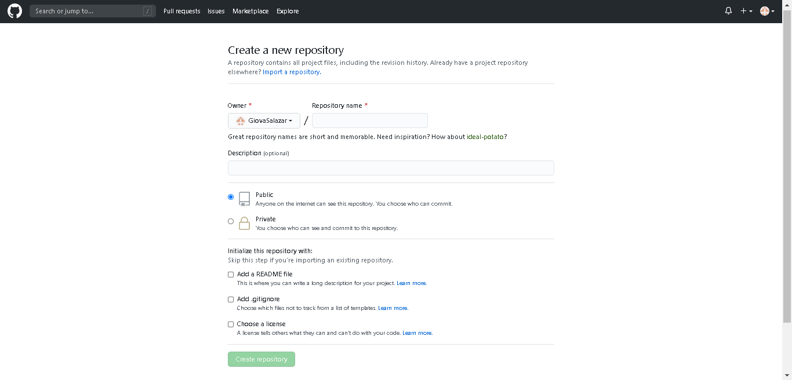
En esta parte elegimos un nombre para el repositorio y como forma opcional podemos agregar una descripción para dicho repositorio, luego dejamos por defecto "public" lo cual significa que nuestro repositorio será visto por todos (la opción "private" es solo para personas que han pagado una suscripción y no todos podrán verlo) por ultimo damos click en "create repository".
Nos quedará creado el repositorio asi como muestra la imagen
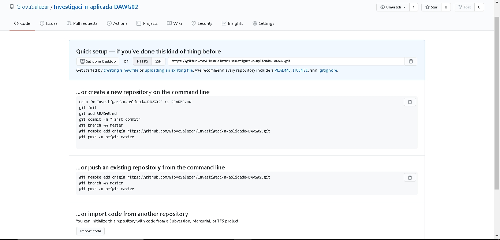
2. Ahora nos dirigimos a la consola de GIT para ello en el buscador de Windows escribimos git y selecionamos el programa.
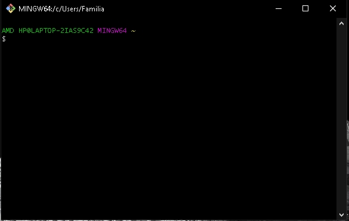
3. En esta consola digitaremos los comandos necesarios para subir los archivos deseados al repositorio. Como primer comando digitaremos "cd" y la ubicación de la carpeta que contiene los archivos y luego digitamos "dir" para verificar que esten todos los archivos deseados
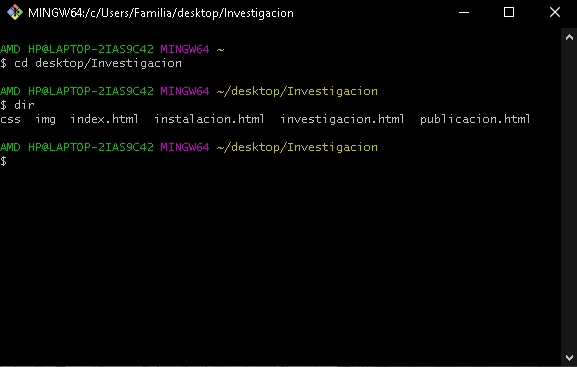
4. Luego iniciamos GIT y hacemos un commit con los comandos " git init", "git add ." y "git commit -m "mi primer commit"".
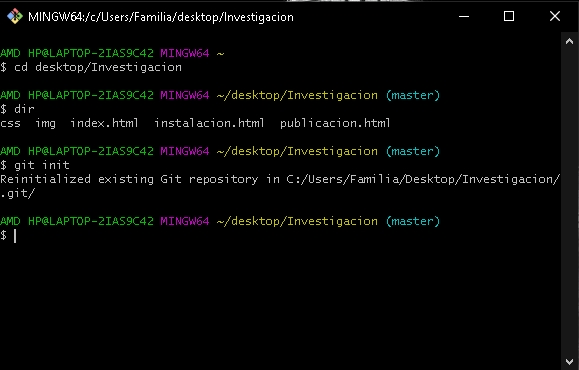
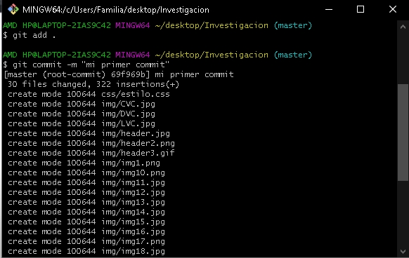
5. Acontinuación digitamos el comando "git remote origin" seguido por el enlace que se nos da al crear el repositorio y es ahi donde subiremos todos los archivos deseado.
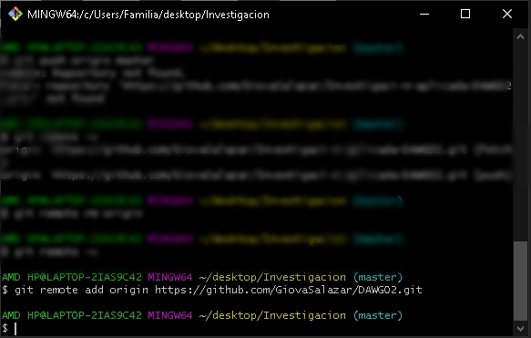
6. Luego digitamos el comando "git push origin master" para poder subir todos los archivos, pueda que en este paso nos pida ingresar nuestras credenciales como el user name y la contraseña y finalmente se habrán subido todos los archivos.
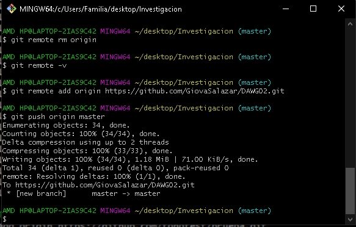
7. Como se puede observar en la imagen todos los archivos se han subido, luego buscamos "branch master" y ahi creamos una nueva rama con el nombre de "gh-pages", despues nos dirigimos a "settings" en la parte superior derecha
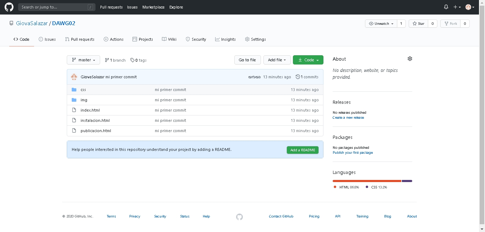
8. Luego buscamos "branches" en la lista izquierda y luego seleccionamos "master" que dentro estará la nueva rama creada anteriormente, seleccionamos esa rama.
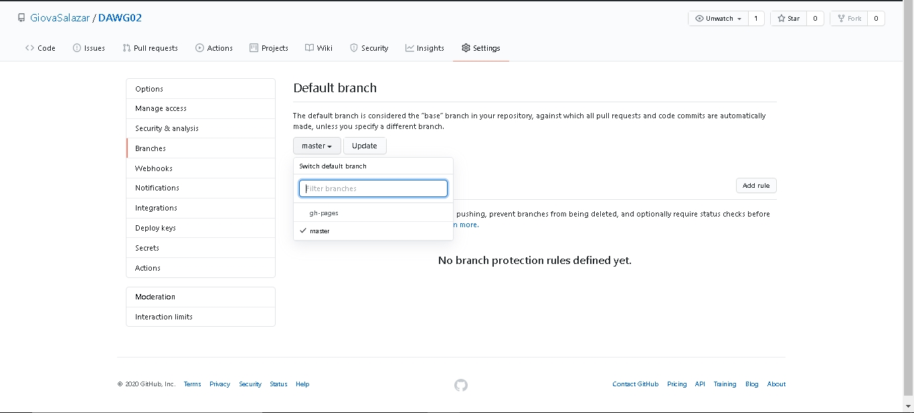
Por ultimo aceptamos la condicion y damos click en "update"
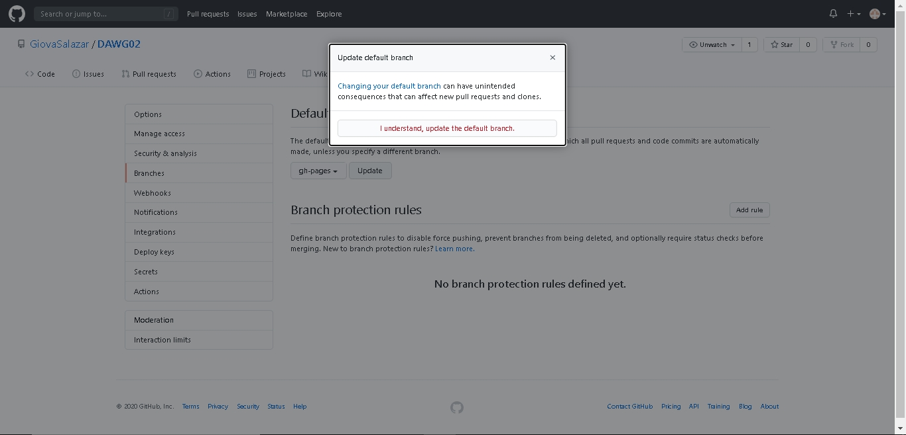